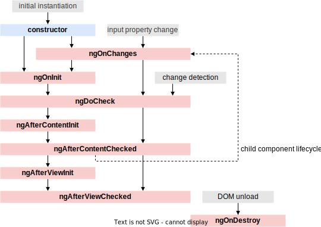
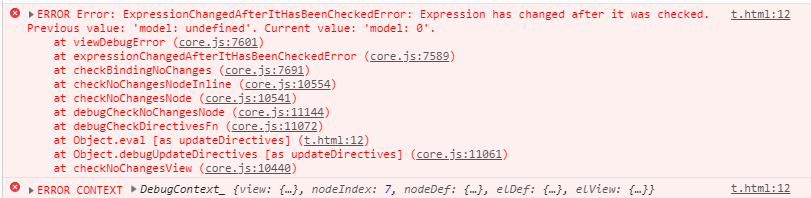
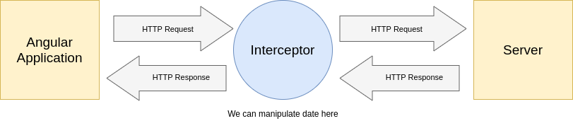

Component Lifecycle
Components have a lifecycle managed by Angular, which offers lifecycle hook interfaces.
By implementing those, we can hook into different steps of the lifecycle.
Full Lifecycle
🤯
Important Hooks
Most of these hooks are only relevant in rare edge cases. The most important ones are:
- ngOnInit: initialize the component
- ngOnDestroy: for cleanup, called immediately before component is destroyed
- ngOnChanges: when data-bound input properties change
ngOnInit
@Component({selector: 'my-cmp', template: `...`})
class MyComponent implements OnInit {
public data$: Observable<Data>;
ngOnInit() {
this.data$ = this.http.get('/api');
// ...
}
}
Constructor vs. ngOnInit
- constructor is for dependency injection
- JS handles the constructor, Angular handles ngOnInit
- input properties are only set after the constructor
ngOnDestroy
@Component({selector: 'my-cmp', template: `...`})
class MyComponent implements OnDestroy {
private subscription: Subscription;
ngOnDestroy() {
this.subscription.unsubscribe();
// ...
}
}
ngOnChanges
@Component({selector: 'my-cmp', template: `...`})
class MyComponent implements OnChanges {
@Input() prop: number = 0;
ngOnChanges({prop}: SimpleChanges) {
if (prop.previousValue !== prop.currentValue) {
// ...
}
}
}
Change Detection
Angular detects when component data changes, calls ngOnChanges and re-renders the view.
It does that by overriding/patching most browser APIs such as addEventListener to trigger the the change detection.
This patching is handled by the Zone.js library, which provides a persistent zone across async tasks and events.
Default behavior
Each component has an associated change detector, which is created at app startup time.
By default each template expression is checked, whether the current values in it differ from the previous ones.
Alternative CD Strategy
We can set a different strategy on component-level called OnPush, which will check in these cases:
- when any of the component's input properties change (i.e. their references)
- when the component fires an event
- when an Observable fires an event
Use OnPush
@Component({
selector: 'todo-list', template: '...',
changeDetection: ChangeDetectionStrategy.OnPush,
})
export class TodoList {
addTodoMutating() { // doesn't trigger a re-render!
this.todos.push(new Todo("TODO 4", false, "John"));
}
addTodoImmutable() { // works, assigns a new object
const newTodo = new Todo("TODO 4", false, "John");
this.todos = [...this.todos, newTodo];
}
}
OnPush & Immutability
OnPush works well in combination with strict immutability.
If you build your application using immutable objects only, you can use OnPush everywhere.
Otherwise it's easy to create change detection bugs with OnPush.
Default vs. OnPush


Performance
Using OnPush can improve the runtime performance.
But be aware of its implications.
Change Detection Loops
Angular enforces a uni-direction data flow. Child components are not allowed to change data in the parent (use events).
Updating the view doesn't trigger further changes that trigger further updates to the view: no loops.
Manual Change Detection
It's possible to disable the automatic CD with the ChangeDetectorRef:
constructor(private ref: ChangeDetectorRef) {
ref.detach(); // disable automatic CD for subtree
setInterval(() => { // run CD every 5 sec
this.ref.detectChanges();
}, 5000);
}
This is likely just a way to treat the symptoms rather than fix the problem underneath.
HTTP Communication
Angular provides a client HTTP API with the HttpClient service.
Making HTTP requests through that offers multiple helpful features, among them: interception.
Interception
Interception allows you to inspect and transform HTTP requests and responses.
Multiple interceptors can form a chain of request/response handlers, that are applied to all HTTP communication.
Write an Interceptor
import { Injectable } from '@angular/core';
import {
HttpEvent, HttpInterceptor, HttpHandler, HttpRequest
} from '@angular/common/http';
import { Observable } from 'rxjs';
@Injectable()
export class NoopInterceptor implements HttpInterceptor {
intercept(req: HttpRequest<any>, next: HttpHandler):
Observable<HttpEvent<any>> {
// pass untouched request to next handler
return next.handle(req);
}
}
Request / Response
The req parameter is the HTTP request.
The next object represents the next interceptor in the chain, or the HttpBackend handler at the end of the chain.
The return value of the handle method is the HTTP response.
This way we can handle both directions inside an interceptor.
Provide Interceptors
Interceptors are handled by Angular's dependency injection system.
Add them to the providers in your app.module.ts:
{
provide: HTTP_INTERCEPTORS, // DI token
useClass: NoopInterceptor, // our interceptor
multi: true // allow multiple interceptors
}
Interceptor Order
The order in which interceptors are provided is relevant. They're getting applied «from the outside in»:
providers: [
{
provide: HTTP_INTERCEPTORS,
useClass: AuthInterceptor,
multi: true
},
{
provide: HTTP_INTERCEPTORS,
useClass: LoggingInterceptor,
multi: true
},
]
Use of Interceptors
- Logging
- Setting headers for: authentication, XSRF …
- Custom JSON parsing
- Caching
- Track Request Progress / Loading State
- Global Error Handling
Interceptor Exercise
Add an interceptor to the application that logs the following type of message for each request to the console:
GET request to api/heroes resulted in a OK (200) response after 502 ms